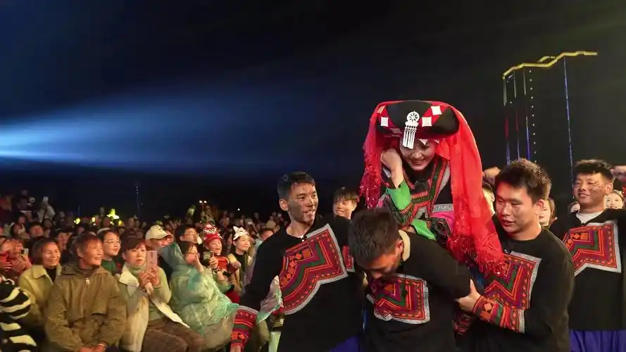
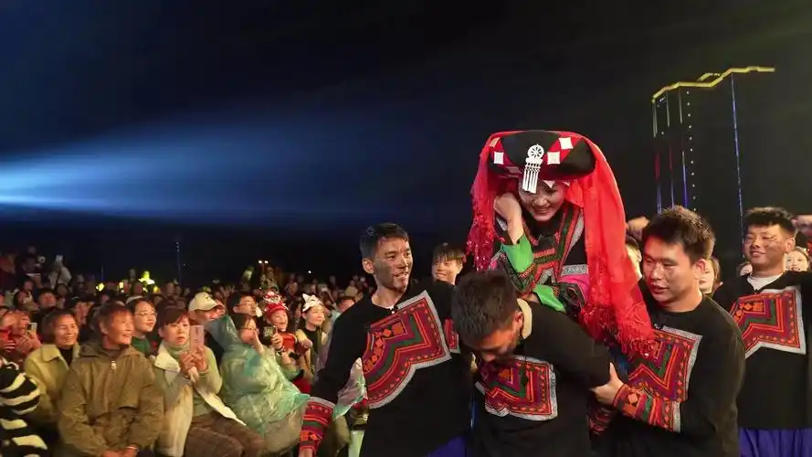

节日庆典
火把节
时间与起源
彝族火把节由来有多种说法。一是源于对火的崇拜，古时火对彝族先民生存至关重要，为感恩和彰显火的神圣，便有了围绕火的庆祝活动，慢慢演变成火把节。二是纪念英雄黑体拉巴，他战胜作恶恶魔，人们燃火把欢庆、纪念他。 还有说法是曾庄稼遇虫害，用火把驱虫后获丰收，为感恩并祈愿年年丰收， 就把这天定为火把节。这些传说让火把节蕴含深厚文化内涵，成为彝族极具特色且意义非凡的重要节日。一般在农历六月二十四日举行，历时三天三夜.
仪式流程
第一天 祭火：村寨宰牛杀羊，集体分享，并备酒肉祭祖。夜幕降临时，人们在选定地点搭建祭台，击石取火点燃圣火，毕摩诵经祭火。家家户户接过火把，游走于田边地角，效仿传说中的阿什嫫以火驱虫 。 第二天 传火：家家户户聚集在祭台圣火下，举行赛马、摔跤、唱歌、斗牛、斗羊、斗鸡等传统活动。姑娘们身着盛装，跳起“朵洛荷”、达体舞 。 第三天 送火：夜幕降临时，人们手持火把竞相奔走，将火把聚在一起形成篝火，围着篝火歌唱、舞蹈。

彝族年（库史）
时间与起源
彝族年，彝语称“库史”，是彝族人民一年一度最重要的传统节日，一般在每年的11月20日左右择吉日举行。关于其起源有多种传说，如与祖先崇拜相关，整个节日中充满浓厚的祖先至上色彩。
仪式流程
年前准备：选定年猪、催肥长膘、择定吉日、酿制美酒、砍备年柴、磨面备食、推制豆腐、掸尘除秽等 。 年节期间：男女老少欢聚一堂，进行祭祀祖先、游艺竞技、餐饮娱乐等活动。祭祀活动包括杀猪宰羊、敬献祖先、祈求保佑等。游艺竞技活动有赛马、摔跤、斗牛、射箭等餐饮娱乐则有丰盛的年饭、酒宴和歌舞表演。 年后：年节结束后，人们继续进行一些收尾活动，如送走客人、整理家务等。
饮食文化

坨坨肉
主要原料：当地黑猪肉
制作方法：坨坨肉制作简单。先选优质的猪肉，一般带皮切成大块，每块约二三两重，形似坨状。接着冷水下锅， 加入适量姜片、花椒等佐料，大火烧开后转小火慢炖，直至肉熟软。捞出后撒上葱花、香菜等，坨坨肉便做好了，吃起来肉质鲜香，口感醇厚。

荞麦粑
主要原料：当地荞麦粉
制作方法：用荞子磨粉调水做成。荞子有甜荞、苦荞之分，甜荞产量高，食之味甜，很受欢迎；苦荞最易消化，营养价值更高。荞粑是保健食品，具有防癌之功效，特别适宜糖尿病患者食用。 荞粑味微苦可口，干香回甜，可以蘸蜂蜜水食用，苦甜爽口，也可以用油煎着吃，是彝族祭祀、起房、婚嫁时的必备食品，也是待客宴席上必不可少的一道美味.

火盆烧烤
主要原料：当地黑猪肉
制作方法：选用20－30斤重的仔猪，杀后去毛，去内脏并洗净后架在火上翻烤。烤好的小猪，切成“砣砣”，抖以佐料食用，也可将整个烤猪放在一个大盘内，另放几碟蘸水或其他佐料，然后各人拿刀，自割自吃。 烤小猪肉外脆里嫩，酥香可口，味道鲜美无比，是彝族独具特色的风味菜。

血大肠
主要原料：当地猪肉
制作方法：把猪血、酒米、猪杂油加上食盐、辣椒、花椒、木姜子面等调料佐料拌匀后灌进猪大肠，两头用细绳拴紧，放进开水锅里煮熟后捞起，待稍冷后切成节食用. 味道鲜美，是招待客人和乡邻的佳品，风味特色：味道鲜美，待客佳品. 以上几份彝族美食各具特色，不仅味道独特，还蕴含着彝族丰富的饮食文化和传统习俗，值得一试.
婚丧习俗
婚礼习俗
彝族的婚礼习俗丰富多彩，具有深厚的文化内涵和独特的民族特色。以下是彝族婚礼习俗的详细介绍： 婚前礼仪 1. 说媒取婚：彝族男子到了适婚年龄，会请媒人“服嘎”说媒。媒人根据等级、生辰、命宫、禁忌等了解两家是否可以开亲。如果命宫相合且双方愿意开亲，则择日到女方家杀小猪取胆、脾等进行占卜。如果不吉，则该婚姻即行中止。说媒合婚，媒人往返于双方之间商议聘金。议定之后，男方择日打酒并携一对同窝孵出的鸡等前往女家请婚。订婚后，如果一方毁约，则须加倍赔偿对方的损失。 2. 节食禁水：彝族至今还保留新娘在出嫁前禁食禁水数天的习俗。新娘一般在婚前半月就开始节食，婚期临近前一周每天只吃一个鸡蛋和喝一碗水，到出嫁那天完全禁水禁食。彝族认为新娘减食的时间越长，便越显得懂礼节，有毅力。 3. 闹婚：确定婚期后，女方在婚前十五天左右，举行闹婚仪式。女方择吉日并告知邻居婚期，邻里则凑粮于女方家酿制醪糟酒，每晚相约女方家，唱“婚歌”，赛“克智”、“卡冉”（论辩的一种，老年智者互述见闻，互相攻讦驳难），往往通霄达旦。其间青年男女每天都进行“蜀确”的抢亲游戏。 婚礼仪式 1. 迎亲： 男方迎亲队伍到女方家：男方迎亲队伍到女方家后，首先要在供桌上点上香，磕头跪拜之后，就把带来的礼物拿出来进行展示，礼物的品种很多，有包头、衣服、鞋子、钱币等物，这是男方的聘礼。女方也给待嫁的新娘准备了嫁妆：衣物、被褥、凳子、彩电等。此时，女方的父母请来的歌师会唱迎亲歌。每唱一段，男方就得展示一样东西，唱到什么就要展示什么，否则就会受到歌师的惩罚，娶亲人会遭到歌师用簸箕在头上敲三下。 泼水仪式：彝族同胞认为，如果男孩迎亲时被泼了水，女孩嫁到男孩家后，将来在吃水问题上不会有困难，生活比较优裕。男方迎亲的队伍到女方家后，女方家的姑娘们早已贮好水严阵以待，待他们一靠近便没头没脑向他们泼去一瓢瓢清水，直到把来客一个个泼得象个落汤鸡才肯罢休，客人则须表现得勇猛、顽强，用衣服或擦尔瓦蒙着头，迎着“暴风骤雨”勇往直前，冲破姑娘们的一道道防线，猛冲进屋，姑娘们则会紧追不舍，尾随进屋乱泼，还会乘其不备用锅烟和炭灰抹他们的脸，把小伙子们一个个弄得狼狈不堪，这实际上也是一种青年男女之间表达爱慕之惰的持殊方式和寻求爱侣的一种难得机会，因此，做客的小伙子都会表现得宽宏大量，一任姑娘们胡乱泼水、抹黑、戏弄而不会生气或显得不愉快。 2. 送亲： 新娘出嫁：新娘一般在楼上梳妆打扮，作出嫁前的准备。动身之前女方的舅辈带着新郎去女方家祖宗牌位前拜别，新娘则由哥哥或弟弟从楼上背到堂屋门外与新郎一同上路，媒人在后招呼所有女方家的客人去送亲。送亲的队伍以一对年轻夫妇为主，其余的姑娘的同伴或较亲的小辈，他们可以一直送到男方家。 送亲队伍出发：彝家的规矩，不管路有多远，一律走路，不骑马，不坐轿，如今也有乘坐汽车和高铁的，于是，娶亲，送亲的队伍在喇叭和唢呐喜气洋洋的乐曲声中，背、抬着令人眼共缭乱的嫁妆，浩浩荡荡地向男方家出发了。一路上，人们还弹月琴，唱山歌，跳左脚舞，热闹非凡。 3. 男方家仪式： 到达男方家：迎亲的队伍回到新郎家门口时，男方家要放火炮和鞭炮，结摩念头进亲经，手里拿着两支火把的少女陪同新娘走进大门，直走到洞房的床上才坐下。此时，新郎新娘要喝交杯酒了，这个仪式由一名中年妇女主持。喝完酒后，新郎走出洞房，女方送亲的女宾陪着新娘在洞房中。根据彝族的传统习俗，新娘在一天之内只能吃一家的饭，即女方娘家人把带来的饭菜热了之后给新娘，并邀请新郎一起吃。随之，男方家会摆酒席招待宾客，并在院子里烧一堆火，众人围着火堆弹奏乐器，演唱歌曲、跳左脚舞，新郎新娘也必定会加入这个行列，这样的活动一般会持续到天亮。 新娘挑水：第二天一早，新娘要去挑两担水到厨房，并在灶膛里烧一把火，意思就是新娘已经开始在这个家里烧火做饭了，以后就在这里生活了。这天，新郎家要宴请新郎所在族的人。 回门：第三天，新娘要回娘家，俗称回门。回门的时间根据各地的风俗而定，有的是四五天，有的是几个月，有的甚至是几年。 彝族的婚礼习俗不仅体现了彝族人民对婚姻的重视，还展示了彝族独特的文化魅力和民族精神。这些习俗在彝族社会中具有重要的社会和文化意义。
 

.jpg)
丧礼习俗
彝族的丧礼习俗具有悠久的历史和丰富的文化内涵，以下是对彝族丧礼习俗的详细介绍： 丧葬形式 彝族的丧葬以火葬为主，尤其在大小凉山地区。明清以后，滇、黔、桂及凉山边缘地区的彝族逐渐改为棺木土葬，但仍保留了本民族的一些特点。 丧礼程序 彝族的丧礼程序复杂，主要包括以下几个环节： 1. 安葬仪式 清洗尸体：死者断气后，家人会清洗其尸身，给死者穿上衣服。男性死者通常穿长衫和裤子，女性死者穿传统的彝裙。 确定火化日期：家人请毕摩根据死者的生辰推算出火化吉日，然后通知亲属。四邻或村民只要听到哭声，不管是否相熟都要到死者家里帮忙料理丧事。 “撮热”：出殡前一天彝族称之为“撮热”，意为“集中所有的人”，是丧期中最热闹的一天。凡是来参加丧葬的人都在这天到齐，祭品（牺牲或同等价值的钱）也在这天送来。奔丧者多以一个家支或村寨为单位。主方就地用酒给他们洗尘，并简要介绍死因及生平事迹。 2. “安灵”仪式 选灵竹：彝族认为死者去世后有三个灵魂，其中之一附在子孙立的灵牌上，称为“玛都”。视仪式场地与有竹山之远近，在仪式前或咒鬼仪式完成后第二天鸡鸣时分，由祖灵至亲之人携带白酒、鸡蛋、炒面和烙荞饼等往高山深处去选灵竹，一般选用茂密竹林中长势挺拔、枝叶繁茂的二岁山竹。当随意选中某一细竹作为灵竹后，向其说明将被选为先祖或先妣某某之灵，并祭以白酒、鸡蛋、炒面和烙荞饼等，然后将其连根拔出，按所送祖灵之数每人一根拔回竹根。 招灵附竹：灵竹拔回后，携至考妣火葬地，在火葬地石堆上绕匝（如火葬地已寻找不到或远在他方也可临时垒三石作代替），先祖绕九匝，先妣绕七匝，然后交给毕摩进行招灵附竹仪式“尼黑尼果”。第一步是叫醒祖灵并通告之，第二步是招灵附竹，第三步是堵塞火葬地污祟。祖灵附竹后，毕摩用黑、花、白三根神枝分别扫除灵竹以除邪祟，随后制作灵桩“做俄”。灵桩“玛都”做成后，要用煮好的鸡肉祭献，然后插除秽神座进行作除秽“苦斯”仪礼给新制的灵牌除秽。毕摩念诵《献药经》经文，唤请祖灵前来享用药祭。 3. “送灵”仪式 火葬：火葬时，要在预先选好的火葬地点挖一个坑，上放备好的白柴，烧男尸时堆9层柴，烧女尸时堆7层柴。子女亲友器灵一阵后，将尸体抬上柴堆。尸体的头向北方，男尸面向东方，女尸面向西方，点火焚化。火化后把尸灰捡起撒在山头竹林间，用卵石把火化地点围上一圈。最后由毕摩用红绿线系山竹根一节，及绵羊毛少许，盛入一个小布袋内，装入用竹子编成的小篾箩内制作为祖灵祭祀供奉在家中，整个丧葬程序便结束了。 丧礼中的其他仪式 接气：老人弥留之际，子女要守着老人，在老人快要“落气”时，子女要用一只大公鸡对口“接气”，也有的由长子对着老人的口哈气，以示“接气”。接气后表示老人已去世。 报丧：彝族的报丧方法是鸣枪或鸣炮，村人听到枪声，便会主动前来帮忙。 告丧：向死者的后家告之死者去世的消息，告丧人到后家后，先在后家堂屋里磕头，告之丧讯，主人招呼报丧人坐定，另设一空坐位，意为亡者灵魂就坐，接着捉一鸡让报丧人用左手杀死后切成块煮，鸡头、鸡翅、鸡腿用一根筷子串起挂在门框上，吃过饭后由直系亲属拉一只羊，请一班乐师和亲友杠着魂幡孝旗，敲锣打鼓，吹响长号、唢呐，前去吊丧。 打断气羊：彝语叫“哥则曲”，意为断气的伴，是在老人亡故后，丧家拉来一只绵羊，抱在死者头上绕九圈后，用木棍把羊打死，把羊头对着死者的头放在一起，长者念祭词“你死了，你的魂要到祖先的魂那里生活你带走这只绵羊，作为你的财产，拿去给祖灵作见面礼”，念毕之后，杀羊烧肉祭死者亡灵。 献药：由毕摩依死者生前所患之病配成药剂，在灵位前架一竹槽，死者家属跪在灵位前用一小勺，一面由毕摩育《献药经》，一边将药汁注入竹槽中流出，意为给死者喂药，认为亡灵即可病愈。 指路：彝族送葬仪式上为亡灵指明通往祖地道路的祭祀活动，指路时灵柩放在树枝插成的望乡台之前。孝子跪两旁，毕摩念《指路经》边向致祭亲友身上撒米粒。诵毕，由死者的女婿或后家跪在弓箭处，将所备之箭向前方直射。由毕摩拿一只新笔，蘸着雄鸡冠上的血，用一个面镜照着纸扎的金童玉女，点画耳目口鼻之窍孔，然后便开始发柩，或火葬或土葬。 丧礼中的社会互动 守灵：守灵是凉山彝族地区丧葬的一大习俗，也是各村寨间团结互助和亲戚哀悼死者的一种表现。彝族认为老人辞世是青笋脱壳，菜熟叶黄，是人们新陈代谢的自然规律，用不着过分悲伤。因此灵前既有悲戚的哭声，也有乐天的酒语，还有扣人心弦的摔跤比赛。最吸引人的则莫过于答辩贤言巧语了，通常以宾主对垒的形式，引经据典临场发挥相结合，双方常常争得面红耳赤，难解难分。“阿古荷”是贯通这一夜的活动，鸡鸣之后更盛，通常组织许多人，排成队以领唱的形式为死者指路送魂。祭师毕摩念《送魂经》，经文首先叙述一个人从生病治病到寿终及亲人得到噩耗时的情景，然后谈及世间无人不死之理。再从死者的起居处为点，以日行距离为一段，一程一程地把魂送到祖先居住地。 丧礼的经济负担 彝族人认为，作为儿女厚葬与超度故去的父母，是重孝、贤能的标志，所以谁也不愿落得不孝和无能的名声。因而，不少人为了赢得这一名声，无论父母在世时如何不孝，也要在父母死时，大办丧事，得到这么一个美名。而且，一旦办了丧事，一切不孝的罪名，也会被洗刷掉了许多。在这种观念的影响下，每个家庭办理丧事都是一次沉重的经济负担，有的超过了自己所能承受的能力。有的甚至几代人也无法还清父母丧礼的债务。 彝族的丧礼习俗不仅体现了对死者的尊重和对祖先的崇拜，还反映了彝族社会的团结互助和文化传承。这些习俗在彝族社会中具有重要的社会和文化意义。